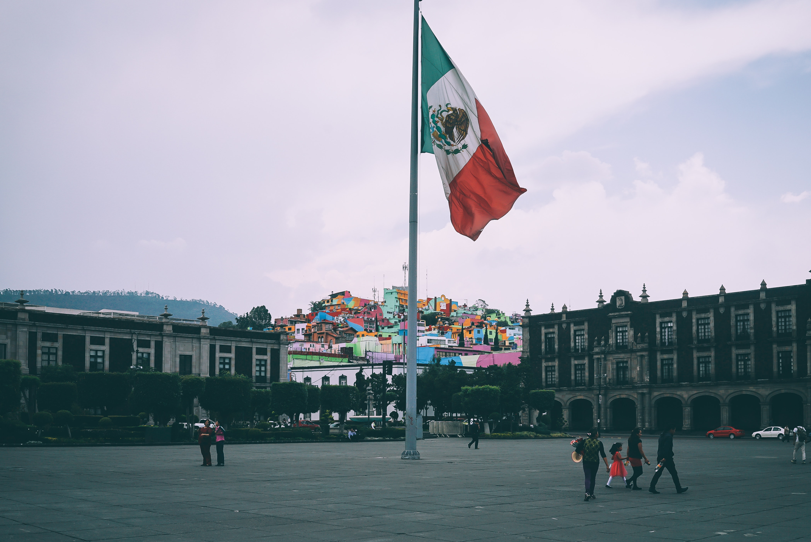

Mexican Culture
Mexican culture is known for its beautiful and vibrant traditions, Colorful art and music, and a very strong emphasis on family and community.
Family and Community
Mexican culture places a strong emphasis on family, and extended family members often play a significant role in each other's lives. Family gatherings and celebrations are important events, and many traditions are passed down from generation to generation.
Music and dance
Music and dance are an integral part of Mexican culture, and there are many different styles of music and dance that reflect the country's diverse regional and ethnic traditions. Some of the most famous Mexican dances include the Jarabe Tapatío, the Danzón, and the Huapango.
Religious traditions
The majority of Mexicans are Roman Catholic, and religion plays an important role in many aspects of daily life. Religious festivals and celebrations are common throughout the year, and many traditions have a religious component.

Art
Mexican culture has a rich artistic tradition, with influences from indigenous, European, and African cultures. Popular art forms include pottery, weaving, embroidery, and painting. Mexican folk art is also known for its vibrant colors and intricate designs.
Festivals and celebrations
Mexico has a long history of festivals and celebrations, many of which have a religious or cultural significance. Some of the most famous festivals include Dia de los Muertos (Day of the Dead), Cinco de Mayo, and Independence Day.
The Flag
La Bandera de Mexico, has three vertical stripes which are green, white and red, whithin the white stripe there is a coat of arms. Each one represents something for the mexican people. Green, represents hope and the Mexican idependece movement. White, represents purity and the Catholic faith. Red, represents the blood of the Mexican people who fought for the freedom and independece of their people. The Coat of arms in the center of the white stripe depicts an eagle perched on a cactus with a snake on its beak. The coat of arms is based on an Aztec legendedwhich tells of an eagle perched on a cactus and devouring a snake. This image was later incorporated into the coat of arms of the Mexican Empire in the early 19th century and has been a symbol of Mexico ever since.
